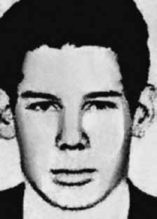

João
Domingos
da Silva
CIRCUNSTÂNCIAS DA MORTE
João Domingos da Silva morreu em São Paulo, no dia 23 de setembro de 1969, em circunstâncias ainda não completamente esclarecidas.
De acordo com a versão oficial apresentada pelos órgãos de repressão, no dia 29 de julho de 1969, João Domingos e Fernando Borges de Paula Ferreira estariam em um automóvel Aero Willys, no Largo da Banana, na Barra Funda (SP). Teriam sido identificados por agentes do Departamento Estadual de Investigações Criminais do estado de São Paulo (DEIC-SP), ao que teria se seguido o confronto armado.
O confronto teria resultado na morte de Fernando Borges de Paula Ferreira e causado ferimentos em João Domingos, que conseguiu fugir e se refugiar na casa da irmã, na região de Osasco (SP). No mesmo dia, contudo, policiais civis efetuaram a prisão de João, que apresentava ferimentos graves decorrentes do confronto. Em decorrência dos ferimentos, os agentes do DEIC teriam levado João Domingos para o Hospital das Clínicas, onde foi submetido a exame de corpo de delito no dia 4 de agosto de 1969.
De acordo com o laudo do exame, assinado pelos médicos José Francisco de Faria e Abeylard de Queiroz Orsini, João Domingos apresentava um único ferimento por arma de fogo, além de “vários ferimentos corto-contusos na região occipital”. João foi submetido a uma delicada cirurgia e apesar de apresentar risco de morte, foi transferido do Hospital das Clínicas para o Hospital Geral do Exército (HGE). Apesar dos esforços dos familiares, que insistentemente procuraram as autoridades do Hospital Geral do Exército solicitando informações, nada lhes era dito. As autoridades militares diziam que nada sabiam sobre o caso.
Pouco mais de um mês após a prisão de João, sua irmã, Iracema Maria dos Santos, foi procurada, quando o estado de saúde de João já era terminal, para que autorizasse a realização de uma cirurgia de emergência. De acordo o depoimento de Iracema: “João chegou em casa baleado. Estava ensanguentado e limpamos rápido o corpo e amarramos uma faixa para estancar o sangramento. Era apenas um buraco de bala no peito, um pouco abaixo do mamilo esquerdo. A bala não tinha chegado a atravessar o corpo, ficando parada nas costas. Sentimos que a casa estava sendo cercada por mais de 50 viaturas da polícia. Levaram-no para o Hospital das Clínicas. Alguns dias depois fiquei sabendo que o Exército o tinha seqüestrado. Fui várias vezes ao Hospital Geral do Exército e diziam que não estava lá. Depois de 33 dias que o tinham tirado de minha casa, foram ao meu serviço, dizendo que ele estava muito mal, que tinha passado por uma cirurgia e que ia ter que repetir, mas que precisavam da assinatura de alguém da família. […] Quando entrei fui tomada de um pânico tão grande que eu nem acreditava […] que aquele esqueleto humano que estava na minha frente era meu irmão”.
Além do ferimento registrado pelo exame de corpo de delito realizado durante a permanência de João Domingos no Hospital das Clínicas, o laudo do exame necrológico, assinado por Octávio D’Andrea e Orlando Brandão, registrou outros ferimentos, tais como cicatrizes cirúrgicas, escaras de decúbito na região sacra e mais um ferimento por projétil na região vertebral, terço inferior. A CEMDP, ao julgar o processo relativo ao caso entendeu, a partir do confronto entre os dados do laudo de exame de corpo de delito com os dados do laudo de exame necroscópico, que João Domingos, preso com um ferimento no tórax e levado ao Hospital das Clínicas, foi submetido a tortura e maus tratos ao ser transferido para o HGE, onde morreu em consequência de “ferimentos perfuro-contundentes no abdômen”.
Segundo análise da relatora do caso na CEMDP, Suzana Keniger Lisbôa, em seu parecer de 1996, no início de 1969 a repressão política ainda se articulava para compor o aparato organizado que viria a se formar na década de 1970. Por isso, ainda se preocuparam em buscar Iracema, irmã de João, para que ela testemunhasse que “cuidavam” do irmão. Após os votos da relatora e do conselheiro Nilmário Miranda, favoráveis ao reconhecimento da responsabilidade do Estado, e do general Oswaldo Pereira Gomes, contrário, Luís Francisco Carvalho Filho pediu vistas ao caso.
Foi então expedido ofício ao Hospital Geral do Exército em São Paulo, onde João esteve internado e morreu, do qual se obteve a seguinte resposta: “Não consta de prontuário, ou no livro de entrada e nem ficha de internação médica hospitalar do referido paciente, na data e período provável mencionado de sua entrada e mesmo durante esse ano”. Em pedido análogo feito ao Hospital das Clínicas, o deputado federal Nilmário Miranda obteve a seguinte declaração da Divisão de Arquivo Médico do Hospital das Clínicas de São Paulo: “Consta nos Arquivos deste Hospital que o paciente João Domingues da Silva, registro nº 902.993, foi internado em 30.07.69, tendo obtido alta nesse mesmo dia. Ferimento por arma de fogo. Diagnósticos: Ferimento de região abdominal por projétil de arma de fogo; ferimentos de estômago, fígado, diafragma e pulmão. Conduta: Tratamento clínico; em 30.07.69: Laparotomia exploradora, esplenectomia, sutura de estômago, fígado, diafragma e pulmão. Consta no resumo mecanizado de alta do paciente como médicos que o atenderam: Dr. Okumura, Dr. Fujimura, Dr. José Mário Reis e Dr. Medeiros (anestesista)”.
Em resposta a pedido de informações da CEMDP, a Secretaria de Segurança Pública de São Paulo encaminhou cópia de documentos oriundos do antigo DOPS, localizados no Arquivo do Estado de São Paulo: 1. Cópia truncada de reportagem publicada em 31 de julho de 1969 pelo jornal A Gazeta, sob o título “Homens do bando da metralha estão caindo nas mãos da lei”. A reportagem confirma o depoimento da irmã, no sentido de que João foi preso em sua residência. Informa que ele estava internado no Hospital das Clínicas e que as investigações estavam em desenvolvimento. 2. Boletim de ocorrência do 23º Distrito Policial, de 29 de julho de 1969, sobre o episódio que culminou com o ferimento sofrido pela vítima. Foi registrado por solicitação telefônica, às 23 horas. Os ocupantes do veículo, onde estariam João e outra pessoa, identificada como Sérgio Luiz Motta ou Humberto Turra, reagiram a tiros à abordagem policial. Sérgio ou Humberto foi morto no local. João, ferido, conseguiu fugir, mas foi detido posteriormente na cidade de Osasco. Informa, ainda, que três feridos foram socorridos no Hospital das Clínicas, não especificando se João era um deles. 3. No trecho do denominado Relatório Especial de Informações no 23, do Quartel General do Exército em São Paulo, datado de 1o de agosto de 1969, poucos dias depois da prisão, há um capítulo dedicado a João Domingos da Silva. Relata como ele teria sido preso e submetido a leve interrogatório em face de seu estado de saúde. A importância da prisão está delineada no item cinco do mesmo documento: “A prisão de João Domingos da Silva permitiu o levantamento de mais uma base da VPR. Tal terrorista, convenientemente interrogado, quando seu estado de saúde permitir, poderá fornecer novos dados que conduzam à desarticulação de novas bases e a prisão de seus integrantes”.
Foram fornecidas, ainda, cópias da certidão de óbito, dando conta de que a requisição foi do DOPS (Departamento de Ordem Política e Social), e de diversos outros documentos relacionados com a militância de João Domingos. Não foi encontrada na documentação nenhuma referência ao local exato do óbito, que se supõe ser o Hospital Geral do Exército. Foi solicitado também um parecer médico para se compreender melhor as diferentes lesões registradas no laudo de corpo de delito (exame realizado no Hospital das Clínicas, no dia de sua internação) e no laudo cadavérico do IML (Instituto MédicoLegal), e suas eventuais incompatibilidades.
Foi possível recompor em parte a trajetória de João Domingos da Silva nos últimos dias de vida: “vítima de tiroteio, em 29 de julho, no bairro da Barra Funda, São Paulo, ao ser baleado, fugiu. Foi para a casa da irmã, enfermeira, em Osasco, onde recebeu os primeiros cuidados e acabou sendo preso, no mesmo dia. Deu entrada no Hospital das Clínicas em 30 de julho e foi imediatamente submetido a exame de corpo de delito, constatando-se o ‘risco de vida’ e uma ‘laparatomia exploratória’, cirurgia de grande extensão, com ‘sutura de estômago, fígado, diafragma e pulmão’. Ao invés de ser levado para a UTI (Unidade de Terapia Intensiva), recebeu ‘alta’ no mesmo dia 30 para ser transferido ao Hospital Geral do Exército.
É possível concluir-se que a morte de João Domingos da Silva decorreu da ação de agentes do Estado, bem como pela omissão de atendimento hospitalar adequado. João Domingos da Silva foi sepultado no Cemitério de Osasco (SP).
João Domingos da Silva died in São Paulo, on September 23, 1969, under circumstances that are not yet completely clear.
According to the official version presented by the repression bodies, on July 29, 1969, João Domingos and Fernando Borges de Paula Ferreira were in an Aero Willys car, in Largo da Banana, in Barra Funda (SP). They were identified by agents from the State Department of Criminal Investigations of the state of São Paulo (DEIC-SP), which was followed by an armed confrontation.
The confrontation reportedly resulted in the death of Fernando Borges de Paula Ferreira and caused injuries to João Domingos, who managed to escape and take refuge in his sister's house, in the region of Osasco (SP). On the same day, however, civil police officers arrested João, who suffered serious injuries resulting from the confrontation. As a result of his injuries, DEIC agents took João Domingos to the Hospital das Clínicas, where he underwent a forensic examination on August 4, 1969.
According to the examination report, signed by doctors José Francisco de Faria and Abeylard de Queiroz Orsini, João Domingos had a single gunshot wound, in addition to “several blunt wounds in the occipital region”. João underwent a delicate surgery and despite being at risk of death, he was transferred from the Hospital das Clínicas to the Army General Hospital (HGE). Despite the efforts of family members, who insistently approached the authorities at the Army General Hospital requesting information, nothing was said to them. Military authorities said they knew nothing about the case.
Just over a month after João's arrest, his sister, Iracema Maria dos Santos, was approached, when João's health was already terminal, to authorize emergency surgery. According to Iracema's testimony: "João arrived home shot. He was bloody and we quickly cleaned his body and tied a bandage to stop the bleeding. It was just a bullet hole in his chest, a little below his left nipple. The bullet had not gone through his body, remaining on his back. We felt that the house was being surrounded by more than 50 police vehicles. They took him to the Hospital das Clínicas. A few days later I found out that the Army had him kidnapped. I went to the Army General Hospital several times and they said he wasn't there. After 33 days of taking him from my house, they came to my office, saying that he was in such a bad way, that he had undergone surgery and that it would have to be repeated, but that they needed a signature from someone in the family [...]
In addition to the injury recorded by the forensic examination carried out during João Domingos' stay at Hospital das Clínicas, the necrological examination report, signed by Octávio D'Andrea and Orlando Brandão, recorded other injuries, such as surgical scars, bedsores in the sacral region and another projectile wound in the vertebral region, lower third. CEMDP, when judging the process relating to the case, understood, based on the comparison between the data from the corpus delicti examination report and the data from the necroscopic examination report, that João Domingos, arrested with a wound to the chest and taken to Hospital das Clínicas, was subjected to torture and ill-treatment when transferred to HGE, where he died as a result of “perforating-blunt injuries to the abdomen”.
According to the analysis of the rapporteur of the case at CEMDP, Suzana Keniger Lisbôa, in her 1996 opinion, at the beginning of 1969 political repression was still being articulated to form the organized apparatus that would come to be formed in the 1970s. Therefore, they were still concerned about looking for Iracema, João's sister, so that she could testify that they “looked after” her brother. After the votes of the rapporteur and counselor Nilmário Miranda, in favor of recognizing the State's responsibility, and General Oswaldo Pereira Gomes, against, Luís Francisco Carvalho Filho asked for a review of the case.
A letter was then sent to the Army General Hospital in São Paulo, where João was hospitalized and died, from which the following response was obtained: “It is not included in the medical records, or in the admission book, nor in the hospital medical admission record of the said patient, on the date and probable period mentioned of his admission and even during that year”. In a similar request made to the Hospital das Clínicas, federal deputy Nilmário Miranda obtained the following statement from the Medical Archives Division of the Hospital das Clínicas de São Paulo: "It is stated in the Archives of this Hospital that the patient João Domingues da Silva, registration no. 902,993, was admitted on 07/30/69, having been discharged that same day. Gunshot wound. Diagnoses: Wound in the abdominal region by a firearm projectile; injuries to the stomach, liver, diaphragm and lung. Management: Clinical treatment; on 07/30/69: Exploratory laparotomy, splenectomy, suturing of the stomach, liver, diaphragm and lung.
In response to a request for information from CEMDP, the São Paulo Public Security Secretariat sent a copy of documents from the former DOPS, located in the São Paulo State Archive: 1. Truncated copy of a report published on July 31, 1969 by the newspaper A Gazeta, under the title “Men from the machine gun gang are falling into the hands of the law”. The report confirms the sister's testimony, in the sense that João was arrested at his residence. He informs that he was admitted to Hospital das Clínicas and that investigations were underway. 2. Police report from the 23rd Police District, dated July 29, 1969, about the episode that culminated in the injury suffered by the victim. It was registered by telephone request, at 11 pm. The occupants of the vehicle, which contained João and another person, identified as Sérgio Luiz Motta or Humberto Turra, responded by shooting at the police approach. Sérgio or Humberto was killed on the spot. João, injured, managed to escape, but was later detained in the city of Osasco. It also informs that three injured people were treated at Hospital das Clínicas, without specifying whether João was one of them. 3. In the excerpt from the so-called Special Information Report no. 23, from the Army Headquarters in São Paulo, dated August 1, 1969, a few days after the arrest, there is a chapter dedicated to João Domingos da Silva. It reports how he was arrested and subjected to light interrogation due to his state of health. The importance of the arrest is outlined in item five of the same document: "The arrest of João Domingos da Silva allowed the survey of yet another VPR base. Such a terrorist, properly interrogated, when his state of health allows, will be able to provide new data that will lead to the dismantling of new bases and the arrest of their members."
Copies of the death certificate were also provided, stating that the request was from the DOPS (Department of Political and Social Order), and several other documents related to João Domingos' activism. No reference to the exact place of death was found in the documentation, which is assumed to be the Army General Hospital. A medical opinion was also requested to better understand the different injuries recorded in the corpus delicti report (exam carried out at the Hospital das Clínicas, on the day of his admission) and in the cadaveric report from the IML (Instituto MédicoLegal), and their possible incompatibilities.
It was possible to partially reconstruct the trajectory of João Domingos da Silva in the last days of his life: "victim of a shooting, on July 29, in the neighborhood of Barra Funda, São Paulo, when he was shot, he fled. He went to the house of his sister, a nurse, in Osasco, where he received the first care and ended up being arrested, on the same day. He was admitted to the Hospital das Clínicas on July 30 and was immediately subjected to a forensic examination, confirming the 'risk to life' and a ‘exploratory laparatomy’, major surgery, with ‘suturing of the stomach, liver, diaphragm and lung’ Instead of being taken to the ICU (Intensive Care Unit), he was ‘discharged’ on the same day 30 to be transferred to the Army General Hospital.
It is possible to conclude that João Domingos da Silva's death resulted from the actions of State agents, as well as the omission of adequate hospital care. João Domingos da Silva was buried in the Osasco Cemetery (SP).
João Domingos da Silva murió en São Paulo, el 23 de septiembre de 1969, en circunstancias que aún no están del todo claras.
Según la versión oficial presentada por los órganos de represión, el 29 de julio de 1969, João Domingos y Fernando Borges de Paula Ferreira se encontraban en un automóvil Aero Willys, en Largo da Banana, en Barra Funda (SP). Fueron identificados por agentes del Departamento Estatal de Investigaciones Criminales del estado de São Paulo (DEIC-SP), lo que fue seguido de un enfrentamiento armado.
El enfrentamiento habría causado la muerte de Fernando Borges de Paula Ferreira y herido a João Domingos, quien logró escapar y refugiarse en la casa de su hermana, en la región de Osasco (SP). Sin embargo, el mismo día, agentes de la policía civil detuvieron a João, que sufrió heridas graves a consecuencia del enfrentamiento. Como consecuencia de sus heridas, agentes del DEIC llevaron a João Domingos al Hospital das Clínicas, donde fue sometido a un examen forense el 4 de agosto de 1969.
Según el informe del examen, firmado por los médicos José Francisco de Faria y Abeylard de Queiroz Orsini, João Domingos presentaba una sola herida de bala, además de “varias heridas contundentes en la región occipital”. João fue sometido a una delicada cirugía y a pesar de estar en riesgo de muerte, fue trasladado del Hospital das Clínicas al Hospital General del Ejército (HGE). A pesar de los esfuerzos de los familiares, quienes se acercaron insistentemente a las autoridades del Hospital General del Ejército solicitando información, nada les dijeron. Las autoridades militares dijeron que no sabían nada sobre el caso.
Poco más de un mes después del arresto de João, su hermana, Iracema Maria dos Santos, fue contactada, cuando la salud de João ya era terminal, para autorizar una cirugía de emergencia. Según el testimonio de Iracema: "João llegó a casa baleado. Estaba ensangrentado y rápidamente le limpiamos el cuerpo y le pusimos una venda para detener la hemorragia. Era sólo un agujero de bala en el pecho, un poco debajo del pezón izquierdo. La bala no había atravesado su cuerpo, quedándose en la espalda. Sentimos que la casa estaba siendo rodeada por más de 50 vehículos policiales. Lo llevaron al Hospital das Clínicas. A los pocos días me enteré que el Ejército lo tenía secuestrado. Fui al General del Ejército. Hospital varias veces y dijeron que no estaba, después de 33 días de sacarlo de mi casa, vinieron a mi oficina, diciendo que estaba muy mal, que lo habían operado y que había que repetirlo, pero que necesitaban la firma de alguien de la familia.
Además de la lesión registrada por el examen forense realizado durante la estancia de João Domingos en el Hospital das Clínicas, el informe de examen necrológico, firmado por Octávio D'Andrea y Orlando Brandão, registró otras lesiones, como cicatrices quirúrgicas, escaras en la región sacra y otra herida de proyectil en la región vertebral, tercio inferior. El CEMDP, al juzgar el proceso relativo al caso, entendió, con base en la comparación entre los datos del informe de examen del cuerpo del delito y los datos del informe de examen necroscópico, que João Domingos, detenido con una herida en el tórax y trasladado al Hospital de Clínicas, fue sometido a torturas y malos tratos cuando fue trasladado al HGE, donde murió a consecuencia de “heridas perforantes-contundentes en el abdomen”.
Según el análisis de la relatora del caso del CEMDP, Suzana Keniger Lisbôa, en su dictamen de 1996, a principios de 1969 la represión política todavía se estaba articulando para formar el aparato organizado que se constituiría en los años 1970. Por eso, todavía estaban preocupados por buscar a Iracema, hermana de João, para que pudiera declarar que “cuidaban” a su hermano. Después de los votos del relator y consejero Nilmário Miranda, a favor de reconocer la responsabilidad del Estado, y del general Oswaldo Pereira Gomes, en contra, Luís Francisco Carvalho Filho pidió una revisión del caso.
Luego se envió una carta al Hospital General del Ejército de São Paulo, donde João fue internado y falleció, de la cual se obtuvo la siguiente respuesta: “No consta en el prontuario, ni en el libro de ingreso, ni en el registro médico de ingreso hospitalario del citado paciente, en la fecha y período probable mencionado de su ingreso e incluso durante ese año”. En una solicitud similar hecha al Hospital de Clínicas, el diputado federal Nilmário Miranda obtuvo la siguiente declaración de la División de Archivo Médico del Hospital de Clínicas de São Paulo: "Consta en el Archivo de este Hospital que el paciente João Domingues da Silva, registro nº 902.993, ingresó el 30/07/69, siendo dado de alta ese mismo día. Herida de bala. Diagnóstico: Herida en la región abdominal por arma de fuego lesiones de proyectil en estómago, hígado, diafragma y pulmón. Manejo: Tratamiento clínico el 30/07/69: Laparotomía exploratoria, esplenectomía, sutura de estómago, hígado, diafragma y pulmón.
En respuesta a una solicitud de información del CEMDP, la Secretaría de Seguridad Pública de São Paulo envió copia de documentos del ex DOPS, ubicados en el Archivo del Estado de São Paulo: 1. Copia trunca de un informe publicado el 31 de julio de 1969 por el diario A Gazeta, bajo el título “Hombres de la banda ametralladora están cayendo en manos de la ley”. El informe confirma el testimonio de la hermana, en el sentido de que João fue detenido en su residencia. Informa que fue internado en el Hospital das Clínicas y que se estaban realizando investigaciones. 2. Informe policial del Distrito 23 de Policía, de 29 de julio de 1969, sobre el episodio que culminó con la lesión sufrida por la víctima. Se registró mediante solicitud telefónica, a las 23 horas. Los ocupantes del vehículo, en el que viajaban João y otra persona, identificada como Sérgio Luiz Motta o Humberto Turra, respondieron disparando contra la aproximación policial. Sérgio o Humberto fueron asesinados en el acto. João, herido, logró escapar, pero luego fue detenido en la ciudad de Osasco. También informa que tres heridos fueron atendidos en el Hospital das Clínicas, sin precisar si João fue uno de ellos. 3. En el extracto del llamado Informe Informativo Especial núm. 23, del Cuartel General del Ejército en São Paulo, del 1 de agosto de 1969, pocos días después del arresto, hay un capítulo dedicado a João Domingos da Silva. Describe cómo fue detenido y sometido a interrogatorios ligeros debido a su estado de salud. La importancia de la detención se resume en el punto cinco del mismo documento: "La detención de João Domingos da Silva permitió explorar otra base del VPR. Un terrorista así, debidamente interrogado, cuando su estado de salud lo permita, podrá proporcionar nuevos datos que conducirán al desmantelamiento de nuevas bases y al arresto de sus miembros".
También se entregaron copias del certificado de defunción, en el que se indica que la solicitud era del DOPS (Departamento de Orden Político y Social), y varios otros documentos relacionados con el activismo de João Domingos. En la documentación no se encontró ninguna referencia al lugar exacto de la muerte, que se supone que es el Hospital General del Ejército. También se solicitó dictamen médico para comprender mejor las distintas lesiones registradas en el informe del cuerpo del delito (examen realizado en el Hospital das Clínicas, el día de su ingreso) y en el informe cadavérico del IML (Instituto MédicoLegal), y sus posibles incompatibilidades.
Fue posible reconstruir parcialmente la trayectoria de João Domingos da Silva en los últimos días de su vida: "víctima de un tiroteo, el 29 de julio, en el barrio de Barra Funda, São Paulo, cuando recibió un disparo, huyó. Se dirigió a la casa de su hermana, enfermera, en Osasco, donde recibió los primeros cuidados y acabó siendo detenido, el mismo día. Ingresó en el Hospital das Clínicas el 30 de julio y fue inmediatamente sometido a un examen forense. examen, confirmando el 'riesgo para la vida' y una 'laparatomía exploratoria', cirugía mayor, con 'sutura de estómago, hígado, diafragma y pulmón'. En lugar de ser llevado a la UCI (Unidad de Cuidados Intensivos), fue 'dado de alta' el mismo día 30 para ser trasladado al Hospital General del Ejército.
Es posible concluir que la muerte de João Domingos da Silva fue resultado de la actuación de agentes estatales, así como de la omisión de atención hospitalaria adecuada. João Domingos da Silva fue enterrado en el Cementerio de Osasco (SP).